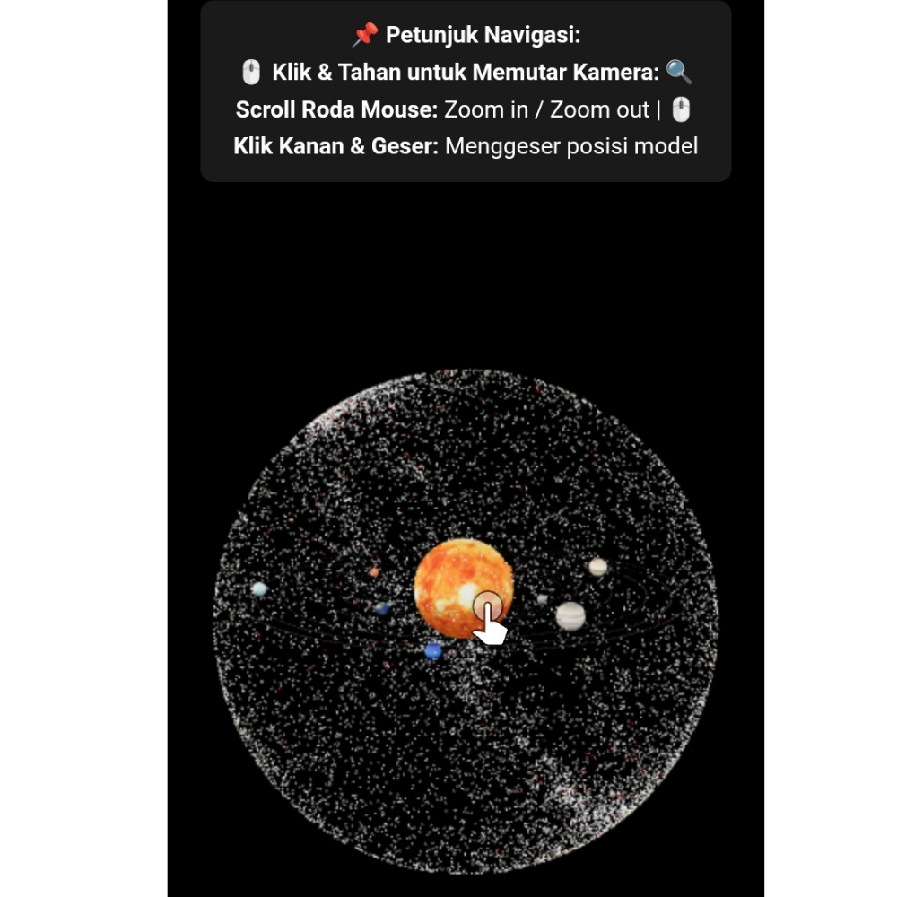
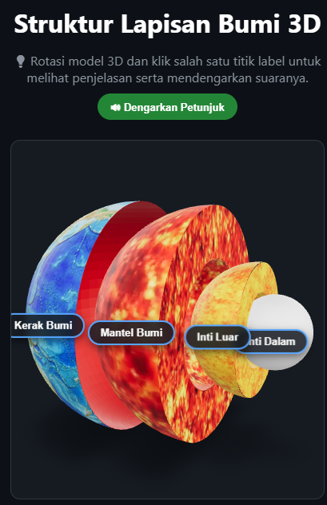

Simulasi 3D Tata Surya 🪐
Visualisasi interaktif 3D gerakan dan susunan planet dalam sistem tata surya.
Coba Simulasi 🚀
Simulasi Gelombang Fisika 🌊
Visualisasi interaktif frekuensi dan amplitudo gelombang secara real-time.
Coba Simulasi